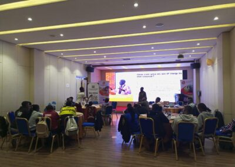
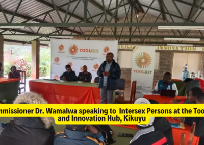

Empowering Intersex Persons: A Collaborative Training for Life and Employability Skills

Empowerment and Skill Development: The Intersex Experience at Swiss Lenana Mount Hotel
Between October 30th and November 3rd, 2023, and subsequently from November 6th to 10th, Swiss Lenana Mount Hotel in Nairobi, and Kikuyu became a hub of transformative learning and growth. Two cohorts of participants gathered for a training program uniquely designed to bolster life and employability skills amongst intersex persons—a group that has long faced societal and occupational hurdles.
A United Initiative for Change
This innovative program emerged from the collaborative efforts of the Kenya National Commission on Human Rights (KNCHR) and partners including Toolkit, a skills and innovation hub, as well as the Intersex Persons Implementation Coordination Committee . The aim was twofold: to foster personal empowerment and to pave the way for sustainable economic empowerment while eradicating employment discrimination. 
Cohort One: Laying the Groundwork (October 30th - November 3rd)
The first cohort embarked on a five-day journey into self-discovery and skill enhancement. The initial day was dedicated to cultivating self-awareness, recognizing individual potential, and grasping the nuances of emotional intelligence—a crucial step for participants to navigate complex social and professional environments.
DAY 1
The first cohort embarked on a five-day journey into self-discovery and skill enhancement. The initial day was dedicated to cultivating self-awareness, recognizing individual potential, and grasping the nuances of emotional intelligence—a crucial step for participants to navigate complex social and professional environments. 
DAY2
As the week progressed, participants were guided through the intricacies of personal branding, communication, teamwork, and time management. A culture of excellence was encouraged, one that intersex persons could align with their unique identities.
DAY 3
By the third day, the spotlight turned to problem-solving—a skill of paramount importance for overcoming the distinct challenges intersex individuals face. The training delved into identifying problems, analyzing causes, and implementing solutions.
DAY 4 and 5
The final days wer reserved for coaching and mentoring, highlighting these as pivotal in supporting the growth and resilience of intersex persons. The closing day involved reflective assessment and planning for the future, evaluating the training's impact and discussing forward steps.
Cohort Two: Advancing the Dialogue (November 6th - 10th)
The second cohort, comprising 25 intersex persons, 5 males, and 3 females, continued the mission set by the first. The training, enriched by the combined expertise of KNCHR and Toolkit, offered a comprehensive curriculum that included subsidized courses on life skills, gap analysis, and technical skills.
Commissioner Dr. Wamalwa Dennis and other facilitators from Toolkit led sessions that blended group discussions, interactive activities, and practical exercises. Dr. Bernard Mogesa, CEO of KNCHR, set the tone with opening remarks that underscored the significance of economic empowerment.
Participants engaged in experiential learning, openly sharing challenges and solutions. Despite facing resource limitations that constrained the training duration, the program successfully instilled valuable knowledge and skills.
A Collaborative Achievement
Each day of training was a testament to the dedication of the facilitators and the eagerness of the participants. The trainers—including Commissioner Dr. Dennis and the expert team from Toolkit—received heartfelt acknowledgment for their guidance and support.
The program concluded with calls for ongoing support, such as counseling and psychosocial backing, and recommendations for future initiatives. The participants, who had grown in knowledge and confidence, expressed profound gratitude for the skills and empowerment they had gained.
In Conclusion
As the curtains fell on the two cohorts' sessions, the participants left equipped not only with new skills but also with the assurance that they had been heard and that their journey to self-improvement and societal acceptance was well underway. The Swiss Lenana Mount Hotel, and the Toolkit Innovate hub in Kikuyu bore witness to a significant stride toward inclusion and empowerment, marking a notable chapter in the narrative of intersex rights and opportunities in Kenya.